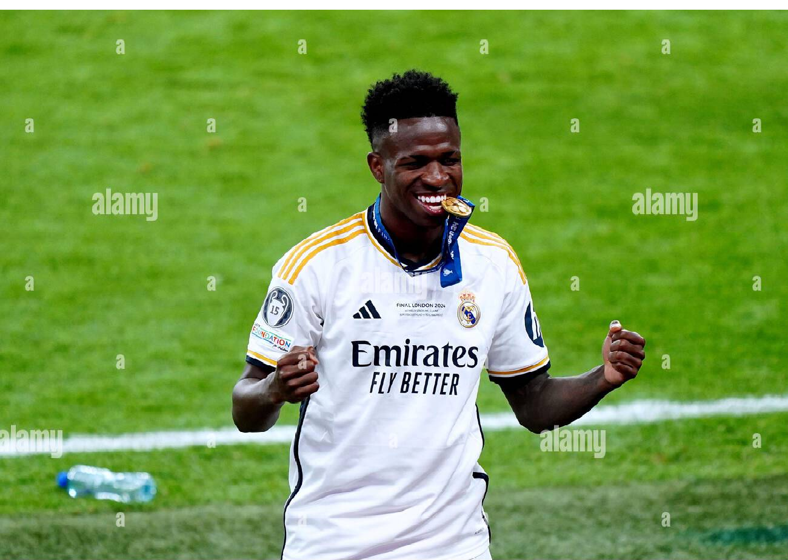

what is the ballon d'or
The Ballon d'Or is an annual award given to the best football player in the world. It is presented by France Football magazine, and the winner is chosen based on their performance in the previous year, including goals, assists, and overall impact in matches. The award is one of the most prestigious individual honors in football.
Vini jr's season
In 2024, Vinícius Júnior had an incredible season with Real Madrid that solidified his status as one of the brightest talents in world football. Throughout the season, he consistently demonstrated his exceptional abilities, scoring crucial goals that often turned the tide of matches in favor of his team. His skill on the ball, remarkable speed, and innate creativity were evident as he navigated through defenses and created opportunities for his teammates. Vinícius's performances in high-stakes games, particularly during the UEFA Champions League, were nothing short of spectacular. He showcased his ability to rise to the occasion, earning accolades and admiration from fans and football experts alike. Many believed that his contributions were significant enough for him to be a leading candidate for the prestigious Ballon d'Or that year, given his undeniable impact on the field. However, despite his remarkable achievements, he ultimately lost out to Rodri, who also had a fantastic season. Regardless of the outcome, Vinícius Júnior's outstanding performance throughout the season made it abundantly clear that he was not just a rising star but truly one of the best players in the world, and his journey was only just beginning.
Rodri's season
In 2024, Rodri had an excellent season with Manchester City that firmly established him as one of the most influential midfielders in the world. Known for his exceptional defensive skills, precise passing, and strong leadership qualities, he played a crucial role in controlling the tempo of the game and orchestrating play from the center of the pitch. His remarkable work rate and tactical intelligence allowed him to break up opposition attacks and transition quickly from defense to offense, consistently showcasing his vision and distribution with key passes that set up goal-scoring opportunities for his teammates. Thanks to Rodri's contributions, Manchester City enjoyed a successful campaign, clinching major trophies, including the Premier League title and the coveted UEFA Champions League trophy. His standout performances in important matches earned him recognition and praise from fans, coaches, and pundits alike, culminating in his selection as the winner of the prestigious Ballon d'Or. This accolade was a testament to his hard work, dedication, and outstanding impact on the pitch, solidifying his status among the elite players in football. As he looks ahead, fans and teammates eagerly anticipate more remarkable performances from Rodri in the coming seasons, hoping to see him continue to shine on the grandest stages of football.

Highlights Of Vini Jr And Rodri 2024 Season
Stats Comaparsion: Vini Jr VS Rodri
Vini Jr vs Rodri - 2024 Season Stats
| Player | Goals | Assists | Man of the Match Awards |
|---|---|---|---|
| Vinícius Júnior | 24 | 11 | 12 |
| Rodri | 15 | 9 | 8 |